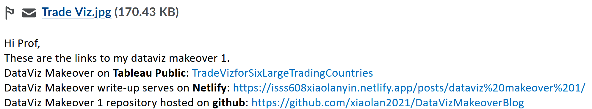

DataViz Makeover
Explore different perspectives and approaches to create more truthful and enlightening data visualisation
Overview
There are two dataviz makeover exercises that are due throughout the term. I will post one or two data visualisation and you are required to critic, suggest ways for improvement and rework the data visualisation. Maybe you retell the story more effectively, or find a new story in the data. I am curious to see the different approaches you all take.
The purpose of the makeover is to improve on the original visualisation. Focus on what works, what doesn’t work, why those things don’t work, and how you made it better. You should try stick to the fields in the data set provided and improve upon the original visualisation. However, if supplementing the data helps you tell a better story, go for it!
DataViz Makeover Topics
Submission Instructions
- The write-up of the DataViz Makeover must be in Quarto html document format. You are required to publish the write-up on Netlify.
- The R project of the DataViz Makeover must be pushed onto your Github repository.
- The DataViz Makeover must be prepared by using Tableau Desktop. The final workbook must be uploaded onto Tableau Public.
- All DataViz Makeover have to be completed by Sunday before mid-night 11.59pm. You are required to provide the links to the DataViz Makeover write-up, github repository and Tableau Public onto eLearn (i.e. DataViz Makeover section) as shown in the screenshot below:

For your reference
From seniors
- DataViz Makeover Blog Link AY2020-2021 Term 2
- DataViz Makeover 1 handout, sample web article and Tableau Public submission.
- DataViz Makeover AY2020-2021 Term 3
- DataViz Makeover AY2021-22 January Term
- DataViz Makeover 1:
- LIN SHUYAN Best make-over design, simple but yet functional.
- SUN SHENGMEI Interesting makeover design and very detail step-by-step description especially on how to work with Tableau Data Prep.
- DataViz Makeover 2
- Ang Bi Lian Effective used of Tableau Story.
- Lin Shuyan Creative implementation of linked views.
- Min Xiaoqi Effective used of interactive tooltip.
- DataViz Makeover 1:
From external sources
- Makeover Monday, especially:
- Story Telling with Data, especially: